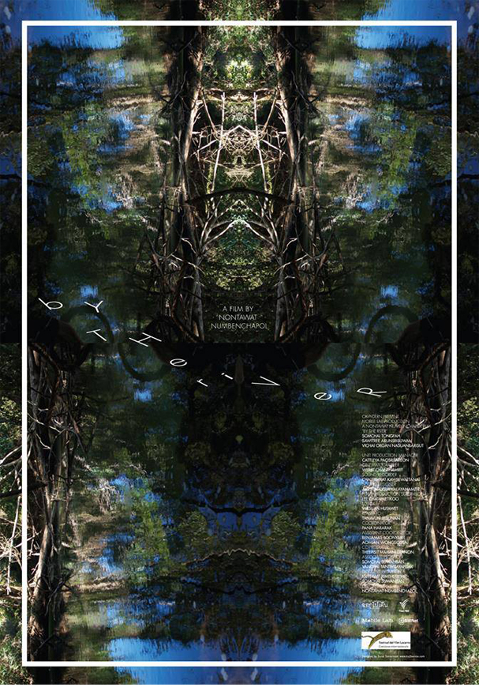

By the River
Synopsis
Amidst the tranquility of the deep woods, the inhabitants of Klity, in Kanchanaburi, Thailand, have always led a simple life, feeding on the fish of the town’s creek. But for some time now the river has been contaminated by a mineral-processing factory. A young local man dives every day to catch fish for his lover, but today he has gone missing, unable to return to her as she awaits.
Director’s Statement
Conflicts over the use of natural resources are not hard to find these days. Since 1998, tailings leaked from a mineral-processing plant in Thong Pha Phum, Kanchanaburi, raised lead contamination in Southern Klity’s creek above safe levels, immeasurably harming the ecosystem and the people. I decided to convey this perennial problem in the belief that such conflicts can be resolved if society and the organisations involved have awareness and good environmental management. If this film can inspire us to think about our own actions and to understand people who live with pollution without choices, I — as a documentary filmmaker — will be truly honoured.
Awards
2013 — Locarno International Film Festival, Cineasti del Presente — Special Mention Award
Official Selection
2014 — Human Rights Human Dignity IFF, Yangon 2014 — Green Film Festival in Seoul 2014 — ChopShots, Jakarta 2013 — Festival dei Popoli, Florence 2013 — Kolkata International Film Festival, India 2013 — SalaMindanaw International Film Festival, Philippines 2013 — World Film Festival, Bangkok 2013 — Hong Kong Asian Film Festival 2013 — Locarno International Film Festival
Official trailer — Vimeo ↗